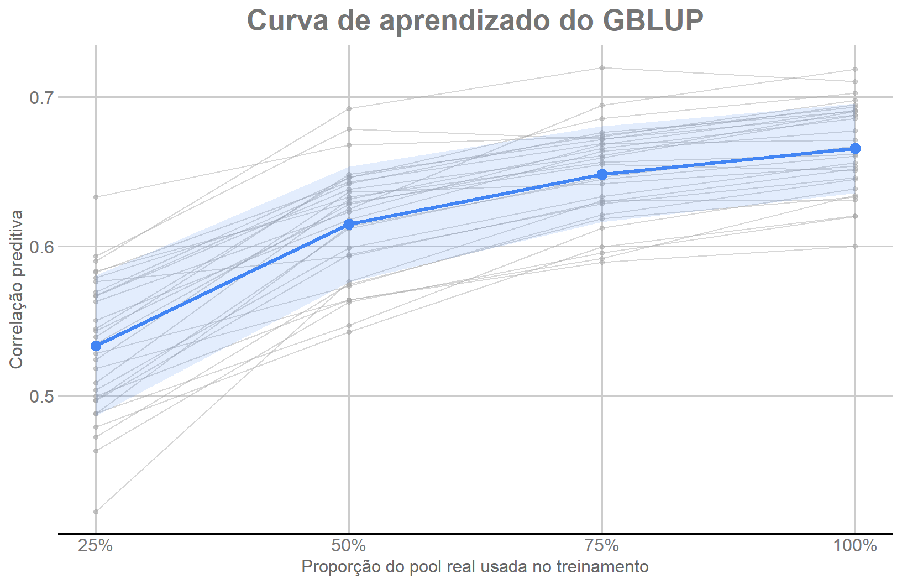

Last updated: 2026-08-11
Checks: 7 0
Knit directory:
genomic-prediction-data-augmentation/
This reproducible R Markdown analysis was created with workflowr (version 1.7.2). The Checks tab describes the reproducibility checks that were applied when the results were created. The Past versions tab lists the development history.
Great! Since the R Markdown file has been committed to the Git repository, you know the exact version of the code that produced these results.
Great job! The global environment was empty. Objects defined in the global environment can affect the analysis in your R Markdown file in unknown ways. For reproduciblity it’s best to always run the code in an empty environment.
The command set.seed(20260810) was run prior to running
the code in the R Markdown file. Setting a seed ensures that any results
that rely on randomness, e.g. subsampling or permutations, are
reproducible.
Great job! Recording the operating system, R version, and package versions is critical for reproducibility.
Nice! There were no cached chunks for this analysis, so you can be confident that you successfully produced the results during this run.
Great job! Using relative paths to the files within your workflowr project makes it easier to run your code on other machines.
Great! You are using Git for version control. Tracking code development and connecting the code version to the results is critical for reproducibility.
The results in this page were generated with repository version 3da6d12. See the Past versions tab to see a history of the changes made to the R Markdown and HTML files.
Note that you need to be careful to ensure that all relevant files for
the analysis have been committed to Git prior to generating the results
(you can use wflow_publish or
wflow_git_commit). workflowr only checks the R Markdown
file, but you know if there are other scripts or data files that it
depends on. Below is the status of the Git repository when the results
were generated:
Ignored files:
Ignored: .Rproj.user/
Ignored: ETA_1_varU.dat
Ignored: data/dados_gblup.csv
Ignored: mu.dat
Ignored: output/01_data_objects.rds
Ignored: output/02_splits_mestre_30rep.rds
Ignored: output/03_genomic_objects.rds
Ignored: output/checkpoints/06_da_progress.csv
Ignored: output/figures/
Ignored: varE.dat
Untracked files:
Untracked: data/artigo_submissãoCBA_26_1_nias_licae_.pdf
Note that any generated files, e.g. HTML, png, CSS, etc., are not included in this status report because it is ok for generated content to have uncommitted changes.
These are the previous versions of the repository in which changes were
made to the R Markdown (analysis/04_gblup_baseline.Rmd) and
HTML (docs/04_gblup_baseline.html) files. If you’ve
configured a remote Git repository (see ?wflow_git_remote),
click on the hyperlinks in the table below to view the files as they
were in that past version.
| File | Version | Author | Date | Message |
|---|---|---|---|---|
| Rmd | f040b0c | Weverton Gomes da Costa | 2026-08-11 | Reorganize GBLUP module as a scientific tutorial |
| html | db45d13 | WevertonGomesCosta | 2026-08-11 | Publish revised tutorial site |
| Rmd | 6abfbb3 | Weverton Gomes da Costa | 2026-08-11 | Restore complete GBLUP learning curve with GDocs style |
| html | d32edc6 | WevertonGomesCosta | 2026-08-11 | Publish workflowr tutorial site |
| Rmd | 2b0bbe4 | Weverton Gomes da Costa | 2026-08-11 | Keep baseline module focused on learning curve |
| Rmd | 2f8d684 | Weverton Gomes da Costa | 2026-08-11 | Rewrite baseline as transparent GBLUP tutorial |
| Rmd | 7580953 | Weverton Gomes da Costa | 2026-08-10 | Add stage 4 GBLUP baseline |
Agora que os conjuntos de treinamento estão definidos e a matriz de
relacionamento genômico G foi construída, podemos avaliar
como o tamanho da amostra real influencia a predição genômica.
Em cada uma das 30 repetições ajustamos o mesmo GBLUP usando:
A validação contém sempre 276 indivíduos e é exatamente a mesma para os quatro tamanhos de treinamento dentro de cada repetição. Portanto, as diferenças entre T25, T50, T75 e T100 refletem principalmente a quantidade de informação fenotípica disponível para o treinamento.
Esta etapa responde à pergunta:
Como o desempenho preditivo do GBLUP muda quando aumentamos o número de indivíduos reais no treinamento?
A equivalência estatística entre os tamanhos reduzidos e T100 será avaliada na Etapa 5.
A matriz G contém os relacionamentos genômicos dos 1.379
indivíduos, mas o fenótipo é fornecido ao modelo somente para os
indivíduos do conjunto de treinamento.
Para representar essa estrutura, criamos um vetor fenotípico com
NA para todos os indivíduos e preenchemos apenas as
posições pertencentes ao Treinamento:
# Estrutura conceitual do vetor fenotípico usado pelo modelo.
y_modelo <- rep(NA_real_, length(y))
y_modelo[treino] <- y[treino]Assim, os indivíduos da validação participam da matriz genômica, mas seus fenótipos não são utilizados no ajuste. As predições obtidas nessas posições podem então ser comparadas aos valores observados para avaliar o modelo.
O componente genômico é especificado no BGLR usando
G como kernel RKHS:
\[ y = \mu + g + \varepsilon, \]
em que g representa o efeito genômico associado à matriz
de relacionamento. O mesmo modelo e os mesmos parâmetros são mantidos em
todos os tamanhos de Treinamento, permitindo uma comparação direta entre
T25, T50, T75 e T100.
PROPORCOES <- c(0.25, 0.50, 0.75, 1.00)
N_REP <- 30
N_ITER <- 10000
BURN_IN <- 5000
FINAL_FILE <- "results/04_baseline_results.csv"Utilizamos 10.000 iterações MCMC, com as primeiras 5.000 descartadas como período de burn-in.
O código abaixo reúne o pipeline analítico aplicado a cada repetição e a cada tamanho de treinamento. Os comentários destacam as etapas essenciais: seleção do split, mascaramento dos fenótipos, especificação do modelo, predição e cálculo das métricas.
# Objetos produzidos nas etapas anteriores.
obj <- readRDS("output/01_data_objects.rds")
splits_mestre <- readRDS("output/02_splits_mestre_30rep.rds")
gobj <- readRDS("output/03_genomic_objects.rds")
y <- obj$y
G <- gobj$G
resultados_baseline <- data.frame()
for (rep in seq_len(N_REP)) {
for (i in seq_along(PROPORCOES)) {
proporcao <- PROPORCOES[i]
# 1. Recupera treinamento e validação da repetição atual.
split <- splits_mestre[[as.character(proporcao)]][[rep]]
treino <- split$treino
validacao <- split$valid
# 2. Mantém fenótipos somente nos indivíduos de treinamento.
y_modelo <- rep(
NA_real_,
length(y)
)
y_modelo[treino] <- y[treino]
# 3. Define o componente genômico usando G como kernel.
ETA <- list(
list(
K = G,
model = "RKHS"
)
)
# 4. Ajusta o mesmo modelo em todos os cenários.
set.seed(
50000 + rep * 100 + i
)
ajuste <- BGLR::BGLR(
y = y_modelo,
ETA = ETA,
nIter = N_ITER,
burnIn = BURN_IN,
verbose = FALSE
)
# 5. Obtém predições apenas para os indivíduos da validação.
predicao <- ajuste$yHat[validacao]
observado <- y[validacao]
# 6. Calcula as métricas de desempenho preditivo.
correlacao <- cor(
observado,
predicao
)
RMSE <- sqrt(
mean(
(observado - predicao)^2
)
)
MAE <- mean(
abs(
observado - predicao
)
)
calibracao <- lm(
observado ~ predicao
)
slope_calibracao <- unname(
coef(calibracao)[2]
)
# 7. Armazena uma linha para a combinação repetição × tamanho.
nova_linha <- data.frame(
repeticao = rep,
proporcao_pool = proporcao,
n_treino = length(treino),
n_validacao = length(validacao),
correlacao = correlacao,
RMSE = RMSE,
MAE = MAE,
slope_calibracao = slope_calibracao
)
resultados_baseline <- rbind(
resultados_baseline,
nova_linha
)
}
}
write.csv(
resultados_baseline,
FINAL_FILE,
row.names = FALSE
)Quatro medidas complementares são utilizadas:
observado ~ predito e ajuda a avaliar a escala das
predições; valores próximos de 1 indicam melhor calibração.A correlação é a métrica principal para a comparação de equivalência, enquanto as demais descrevem aspectos adicionais do comportamento preditivo.
A tabela primária contém uma linha para cada combinação entre as 30 repetições e os quatro tamanhos de treinamento, totalizando 120 resultados.
baseline <- read.csv(FINAL_FILE)
chaves <- paste(
baseline$repeticao,
baseline$proporcao_pool,
sep = "__"
)
stopifnot(nrow(baseline) == 120)
stopifnot(anyDuplicated(chaves) == 0)
stopifnot(all(baseline$repeticao %in% 1:30))
stopifnot(all(baseline$n_validacao == 276))
stopifnot(!anyNA(baseline[, c("correlacao", "RMSE", "MAE", "slope_calibracao")]))Para cada tamanho de treinamento calculamos a média das quatro métricas e o desvio-padrão da correlação. A curva de aprendizado permite visualizar quanto o desempenho aumenta quando mais indivíduos reais são adicionados ao treinamento.
# Médias das quatro métricas em cada tamanho de treinamento.
resumo_baseline <- aggregate(
cbind(
correlacao,
RMSE,
MAE,
slope_calibracao
) ~ proporcao_pool + n_treino,
data = baseline,
FUN = mean
)
# Variabilidade da correlação entre as 30 repetições.
sd_cor <- aggregate(
correlacao ~ proporcao_pool,
data = baseline,
FUN = sd
)
resumo_baseline$sd_correlacao <- sd_cor$correlacao[
match(
resumo_baseline$proporcao_pool,
sd_cor$proporcao_pool
)
]
knitr::kable(
resumo_baseline,
digits = 4,
caption = "Desempenho médio do GBLUP com dados reais"
)| proporcao_pool | n_treino | correlacao | RMSE | MAE | slope_calibracao | sd_correlacao |
|---|---|---|---|---|---|---|
| 0.25 | 275 | 0.5335 | 526.8246 | 417.0343 | 0.9590 | 0.0470 |
| 0.50 | 551 | 0.6147 | 489.8863 | 388.5433 | 1.0213 | 0.0386 |
| 0.75 | 827 | 0.6482 | 472.3547 | 374.1388 | 1.0039 | 0.0319 |
| 1.00 | 1103 | 0.6655 | 462.8698 | 366.7298 | 1.0054 | 0.0300 |
A figura preserva a informação das 30 repetições. Cada linha fina representa a trajetória de uma repetição de T25 até T100. A linha destacada mostra a correlação média e a faixa representa média ± 1 desvio-padrão em cada tamanho de treinamento.
if (!requireNamespace("ggplot2", quietly = TRUE)) {
stop("Instale o pacote ggplot2 para gerar as figuras do tutorial.")
}
if (!requireNamespace("ggthemes", quietly = TRUE)) {
stop("Instale o pacote ggthemes para usar o padrão gráfico GDocs.")
}
baseline_plot <- baseline
baseline_plot$Proporcao_percentual <- baseline_plot$proporcao_pool * 100
resumo_plot <- resumo_baseline
resumo_plot$Proporcao_percentual <- resumo_plot$proporcao_pool * 100
resumo_plot$Limite_inferior <-
resumo_plot$correlacao - resumo_plot$sd_correlacao
resumo_plot$Limite_superior <-
resumo_plot$correlacao + resumo_plot$sd_correlacao
cor_media <- ggthemes::gdocs_pal()(1)
figura_learning_curve <- ggplot2::ggplot(
baseline_plot,
ggplot2::aes(
x = Proporcao_percentual,
y = correlacao,
group = repeticao
)
) +
ggplot2::geom_line(
color = "grey65",
alpha = 0.45,
linewidth = 0.45
) +
ggplot2::geom_point(
color = "grey65",
alpha = 0.45,
size = 1.2
) +
ggplot2::geom_ribbon(
data = resumo_plot,
ggplot2::aes(
x = Proporcao_percentual,
ymin = Limite_inferior,
ymax = Limite_superior
),
inherit.aes = FALSE,
fill = cor_media,
alpha = 0.15
) +
ggplot2::geom_line(
data = resumo_plot,
ggplot2::aes(
x = Proporcao_percentual,
y = correlacao
),
inherit.aes = FALSE,
color = cor_media,
linewidth = 1.15
) +
ggplot2::geom_point(
data = resumo_plot,
ggplot2::aes(
x = Proporcao_percentual,
y = correlacao
),
inherit.aes = FALSE,
color = cor_media,
size = 3
) +
ggplot2::scale_x_continuous(
breaks = c(25, 50, 75, 100),
labels = c("25%", "50%", "75%", "100%")
) +
ggplot2::labs(
title = "Curva de aprendizado do GBLUP",
x = "Proporção do pool real usada no treinamento",
y = "Correlação preditiva"
) +
ggthemes::theme_gdocs() +
ggplot2::theme(
plot.title = ggplot2::element_text(
face = "bold",
hjust = 0.5
)
)
figura_learning_curve
Curva de aprendizado do GBLUP nas 30 repetições, com média e faixa de ±1 desvio-padrão.
ggplot2::ggsave(
filename = "output/figures/04_curva_aprendizado_gblup.png",
plot = figura_learning_curve,
width = 8.5,
height = 5.5,
dpi = 300
)A correlação média aumenta de aproximadamente 0,53 em T25 para 0,67 em T100. O ganho, porém, fica progressivamente menor à medida que mais indivíduos são adicionados. A curva sugere que T75 já se aproxima de T100, mas proximidade visual não é suficiente para declarar equivalência.
Na próxima etapa, T25, T50 e T75 serão comparados formalmente com T100 usando as diferenças pareadas das mesmas 30 repetições.
sessionInfo()R version 4.5.1 (2025-06-13 ucrt)
Platform: x86_64-w64-mingw32/x64
Running under: Windows 11 x64 (build 26200)
Matrix products: default
LAPACK version 3.12.1
locale:
[1] LC_COLLATE=Portuguese_Brazil.utf8 LC_CTYPE=Portuguese_Brazil.utf8
[3] LC_MONETARY=Portuguese_Brazil.utf8 LC_NUMERIC=C
[5] LC_TIME=Portuguese_Brazil.utf8
time zone: America/Sao_Paulo
tzcode source: internal
attached base packages:
[1] stats graphics grDevices utils datasets methods base
loaded via a namespace (and not attached):
[1] gtable_0.3.6 jsonlite_2.0.0 dplyr_1.2.1 compiler_4.5.1
[5] promises_1.5.0 tidyselect_1.2.1 Rcpp_1.1.1 stringr_1.6.0
[9] git2r_0.36.2 dichromat_2.0-0.1 later_1.4.4 jquerylib_0.1.4
[13] textshaping_1.0.4 systemfonts_1.3.1 scales_1.4.0 yaml_2.3.12
[17] fastmap_1.2.0 ggplot2_4.0.3 R6_2.6.1 labeling_0.4.3
[21] generics_0.1.4 workflowr_1.7.2 knitr_1.50 tibble_3.3.1
[25] rprojroot_2.1.1 bslib_0.9.0 pillar_1.11.1 RColorBrewer_1.1-3
[29] ggthemes_5.2.0 rlang_1.1.7 cachem_1.1.0 stringi_1.8.7
[33] httpuv_1.6.16 xfun_0.54 S7_0.2.1 fs_1.6.6
[37] sass_0.4.10 otel_0.2.0 cli_3.6.5 withr_3.0.2
[41] magrittr_2.0.4 digest_0.6.39 grid_4.5.1 rstudioapi_0.17.1
[45] lifecycle_1.0.5 vctrs_0.7.1 evaluate_1.0.5 glue_1.8.0
[49] farver_2.1.2 whisker_0.4.1 ragg_1.5.0 purrr_1.2.1
[53] rmarkdown_2.30 tools_4.5.1 pkgconfig_2.0.3 htmltools_0.5.9